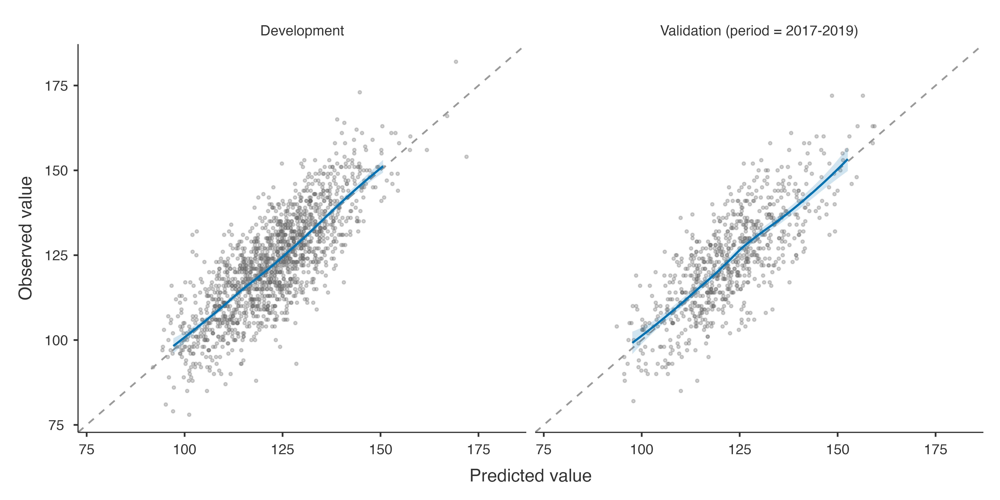

Predicting systolic blood pressure one year later: R², RMSE and MAE, calibration of a continuous prediction, repeated cross-validation, temporal validation and updating.
Question. Can next year’s systolic blood pressure (sbp1y) be predicted from today’s measurements? A continuous outcome needs no event and no threshold: the prediction is a value, and its error is in mmHg.
Note. Development rows, before excluding missing values. Outcome: its mean (SD) overall and in each factor level, and its Pearson correlation with each numeric predictor.
Effects on the Outcome
Crude
Adjusted
β
Lower
Upper
p
β
Lower
Upper
p
sbp
per unit
0.724
0.694
0.754
< .001
0.69145
0.6618
0.721
< .001
chol
per unit
-0.348
-1.094
0.397
.360
0.00227
-0.4460
0.451
.992
bmi
per unit
0.750
0.588
0.912
< .001
0.54557
0.4445
0.647
< .001
age
Q3 vs Q1 (66 vs 53)
4.192
2.251
6.133
< .001
0.71596
-0.5067
1.939
< .001
sex
female
0.000
.034
0.00000
.072
male
1.610
0.123
3.097
.034
0.82275
-0.0749
1.720
.072
smoking
never
0.000
< .001
0.00000
< .001
former
-0.130
-1.837
1.576
.881
-0.66689
-1.6982
0.364
.205
current
3.606
1.613
5.599
< .001
2.53229
1.3308
3.734
< .001
diabetes
no
0.000
< .001
0.00000
< .001
yes
8.005
5.308
10.703
< .001
4.93120
3.2698
6.593
< .001
Note. Crude: each predictor alone, on the same rows. Adjusted: in the prediction model.
Note. Spline predictors: difference in the mean outcome between the third and the first quartile; the p is the F test of the whole (non-linear) association.
Note. The p on a factor's reference row is the F test of the factor.
For a linear model the effects are differences in the mean outcome: each mmHg of today’s pressure predicts 0.69 mmHg next year (regression to the mean makes it less than 1), current smokers 2.5 mmHg more than never smokers, other things equal. The descriptive table shows each predictor’s crude association with the outcome (a correlation for numeric predictors, the outcome mean by level for factors).
Step 3: performance
Performance in the Development Data
95% CI
Measure
Apparent
Lower
Upper
Optimism
Cross-validated
Overall
R²
0.642
0.00540
0.63698
RMSE
8.868
-0.06669
8.93517
MAE
7.081
6.813
7.349
-0.05183
7.13255
Calibration
Calibration-in-the-large
0.000
-0.445
0.445
0.00178
-0.00178
Calibration slope
1.000
0.963
1.037
0.00478
0.99522
Note. Cross-validation: 10 folds × 5 repeats, stratified by outcome quintiles; performance of the out-of-fold predictions, averaged over repeats.
Note. R²: 1 − residual sum of squares / total sum of squares around the mean of the data in which it is measured (can be negative outside the development data). RMSE: root mean squared error; MAE: mean absolute error, in the units of the outcome (lower is better). Calibration-in-the-large: mean of observed − predicted, 0 is ideal. Calibration slope: of the regression of the observed on the predicted outcome, 1 is ideal; below 1 the predictions are too extreme (overfitting).
The model explains 64% of the variance of next year’s pressure after cross-validation; a typical error is 7.1 mmHg (MAE) or 8.9 mmHg (RMSE). With few parameters and many patients the optimism is tiny. Repeated cross-validation predicts every patient with a model that did not see them, five times over different splits.

Step 4: temporal validation and updating
Performance in the Validation Data
95% CI
Data set
Measure
Estimate
Lower
Upper
Validation (period = 2017-2019)
Overall
R²
0.601
RMSE
9.381
MAE
7.569
7.175
7.96
Calibration
Calibration-in-the-large
0.792
0.127
1.46
Calibration slope
0.981
0.924
1.04
Note. The development model is applied unchanged to the validation data. A calibration-in-the-large far from 0 means the mean outcome differs between the populations; a slope below 1, that the predictions are too extreme there.
Model Updating in the Validation Data
vs revision
Data set
Method
Parameters
Intercept
Slope
F
df
p
Chosen
R²
RMSE
Validation (period = 2017-2019)
Original model
0
0.000
1.000
2.47
11
.005
0.601
9.38
Recalibration in the large
1
0.792
1.000
2.17
10
.018
0.604
9.35
Recalibration
2
3.134
0.981
2.36
9
.013
0.604
9.34
Model revision
11
✓
0.615
9.22
Note. Recalibration re-estimates the intercept and the slope of the original prediction; intercept and slope: of the original prediction in the updated model. Each test compares a method with model revision (F test); the closed testing procedure (Vergouwe et al. 2017) keeps the first method, from the original model up, not significantly worse than revision at α = 0.05 (✓). Performance of an updated model is measured in the data used to update it, so it is optimistic, most of all for revision.
In 2017–2019 the model predicts on average 0.8 mmHg too low (calibration-in-the-large: observed − predicted), with an unchanged slope. For a linear model the updating tests are F tests; here even revision is chosen — with hundreds of patients small differences are significant — but the gain in RMSE over the original model is under 0.2 mmHg, which is clinically irrelevant. Statistical significance is not the only criterion for updating.
Step 5: sample size
Sample Size Adequacy (Riley et al. 2019)
Criterion
Required N
Subjects per parameter
1. Shrinkage factor ≥ 0.9
69
6.90
2. Optimism in R² ≤ 0.05 (apparent − adjusted)
74
7.40
3. Residual SD within × 1.1
244
24.40
4. Mean outcome within × 1.1
244
24.40
Minimum required
244
24.40
This development data
1529
152.90
Note. Candidate parameters (excluding the intercept): 10; anticipated adjusted R²: 0.637 (optimism-corrected, this model); outcome mean 122.6, SD 14.83.
Note. The development data meet the minimum sample size.
For a continuous outcome Riley et al. (2019) add two criteria to shrinkage and optimism: a precise residual standard deviation and a precise mean outcome. The development data exceed all four many times over.
Riley, Richard D., Kym I. E. Snell, Joie Ensor, et al. 2019. “Minimum Sample Size for Developing a Multivariable Prediction Model: Part i – Continuous Outcomes.”Statistics in Medicine 38 (7): 1262–75. https://doi.org/10.1002/sim.7993.